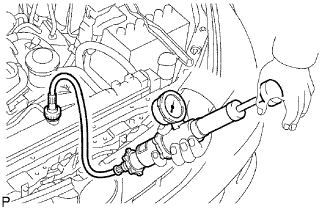

HỆ THỐNG LÀM MÁT > KIỂM TRA TRÊN XE |
| 1. KIỂM TRA RÒ RỈ NƯỚC LÀM MÁT ĐỘNG CƠ |
|  |
Đổ đầy nước làm mát vào két nước và lắp dụng cụ thử nắp két nước.
Hâm nóng động cơ.
Dùng một dụng cụ thử nắp két nước, tăng áp suất bên trong két nước lên tới 118 kPa (1.2 kgf/cm2, 17.1 psi) và kiểm tra rằng áp suất không bị tụt xuống.
Nếu áp suất giảm xuống, hãy kiểm tra rò rỉ của các đường ống, két nước và bơm nước. Nếu không tìm thấy rò rỉ ra bên ngoài, thì kiểm tra thân máy và nắp quy lát.
| 2. KIỂM TRA MỨC NƯỚC LÀM MÁT TRONG BÌNH CHỨA |
Nước làm mát động cơ giữa các vạch L và F khi động cơ nguội.
Nếu mức nước làm mát dưới vach L, thì kiểm tra rò rỉ và bổ sung thêm “Nước làm mát siêu bền của Toyota” hay loại tương đương gốc etylen glycol không chứa silic, amin, nitrit và borat với công nghệ axit hữu cơ tích hợp tuổi thọ cao đến vạch F.
| 3. KIỂM TRA CHẤT LƯỢNG NƯỚC LÀM MÁT ĐỘNG CƠ |
Tháo nắp két nước.
Kiểm tra xem có cặn gỉ quá nhiều bám quanh nắp két nước và lỗ đổ nước trên két. Tương tự, nước làm mát không được lẫn dầu.
Nếu có quá nhiều bẩn, hãy thay thế nước làm mát.
Lắp nắp két nước.